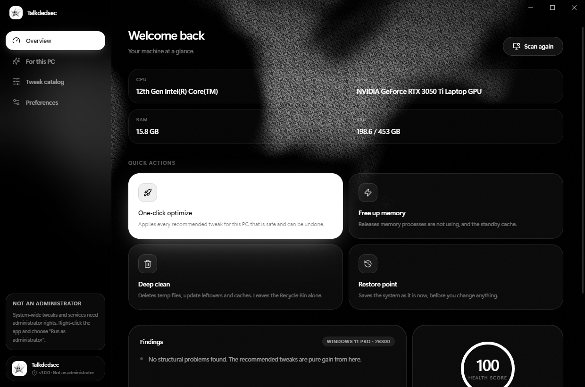
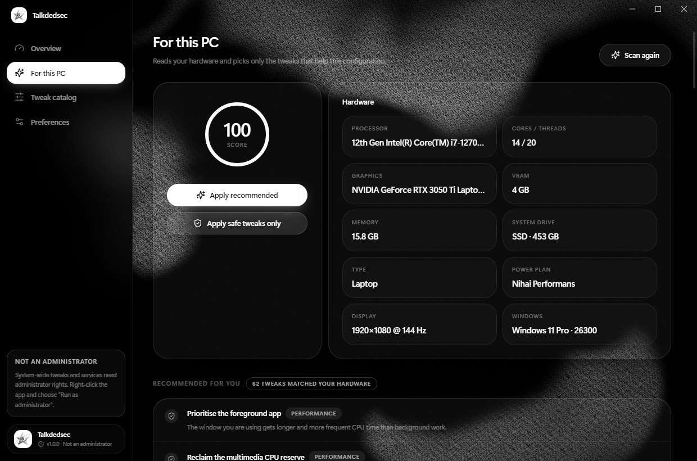
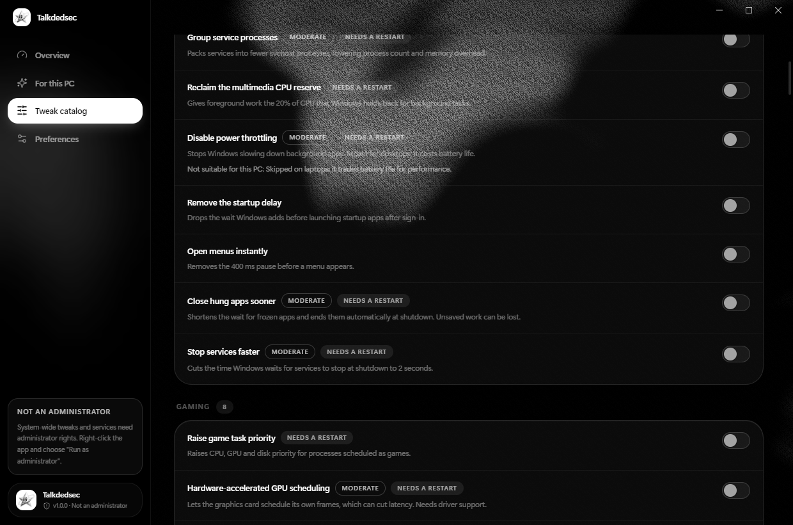

Undo that actually restores.
Before a value is written, the old one is saved with its real registry type, and each service keeps its previous start mode. Reverting puts back exactly what you had, including your own custom values.
114 performance, privacy and cleanup tweaks, picked for the hardware you actually have. Every one of them remembers what was there before, so undo is a single click.
No account. No telemetry. Your data stays on your PC.

What it does
Before a value is written, the old one is saved with its real registry type, and each service keeps its previous start mode. Reverting puts back exactly what you had, including your own custom values.
A read-only scan looks at CPU, GPU, memory, drive type, power plan and whether it is a laptop. Tweaks that would cost battery or need hardware you do not have are skipped, with the reason shown.
No sign-in and nothing about you sent anywhere. The only request is an update check you can switch off.
Optionally creates a Windows restore point before anything is applied, as a second safety net.
Release unused working sets and the standby cache, or clear temp files and update leftovers in one pass.
See everything that launches with Windows and switch entries off without deleting them, the way Task Manager does.
Remove programs and built-in Windows apps, then review the folders and registry keys they left behind before deleting them.
Each change is logged with free memory, process and service counts measured before and after it.
How it works
One read-only pass over your hardware and Windows settings. You get a score, a list of findings and the tweaks that match this configuration.

Take the recommended set in one click, or flip individual switches in the catalog. Each tweak says how risky it is and whether it needs a restart. Risky ones ask twice.

Switch a tweak off and the saved value goes back. If a tweak fails halfway, the part that was written is rolled back on the spot.
The catalog
Every entry is plain data: registry values, service start modes or a short PowerShell step. You can read all of them in one JSON file.
Safety
Tuning tools earn a bad name by being careless. These are the lines this one does not cross.
Questions
The installer is not code-signed yet, so Windows does not recognise the publisher. Choose "More info", then "Run anyway". The full source is public and you can build the same installer yourself with one command.
Most tweaks write under HKEY_LOCAL_MACHINE or change services, which Windows only allows for administrators. Tweaks that only touch your own user settings work without it.
102 of 114 restore the exact previous value. A few PowerShell-based ones, such as the power plan and DNS, go back to the Windows default instead of a custom setting you had. Tweaks that cannot be undone are labelled and never recommended automatically.
In a small JSON file in the app's data folder under your user profile. Nothing is uploaded.
Once at startup it asks GitHub whether a newer version exists. The request carries no data about you and can be switched off in Preferences. An update is checked against the SHA-256 digest of the release before it runs.